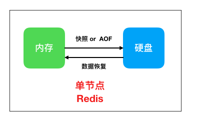
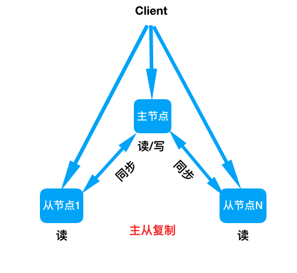
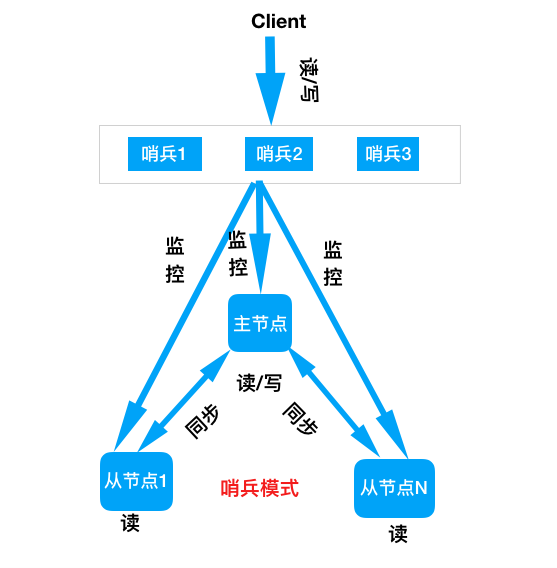
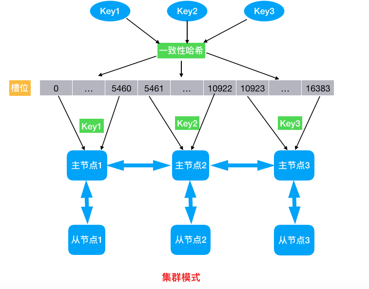

自我介绍
我，Redis,内存数据库，有着比memcached更强大的功能。现在已经是这个领域的头把金交椅。
常规数据库
这里所说的常规数据库是指基于硬盘读写的数据库，比如Oracle，Mysql，Mongodb等。基于硬盘读写的数据库可以有效的保证数据的高可用性。这里的高可用性指的是操作系统或者数据库崩溃之后，不会造成数据丢失，这也是对数据库的最基本要求。
内存数据库
基于硬盘读写的数据库虽然可以保证数据的高可用性，但是读写速度比较慢，这也是磁盘I/O的天然属性。虽然切换固态硬盘之后，性能会有显著提升，但是经济成本也会随之升高，而且固态硬盘使用寿命偏低。为了解决这个问题，Redis做出了改变。Redis是基于内存进行读写的数据库，把数据全部存储在内存中，这样就可以大幅提高数据的读写速度。
memcached
说到内存数据库，不得不提memcached，memcached比Redis出现的更早，也是基于内存进行数据存储。在十几年前，大家通用的缓存方案就是memcached。memcached支持Key-Value形式的数据存储，但是只支持String类型的数据结构，不支持更复杂的数据结构，也不支持集群。
操作系统或者memcached重启后数据就会丢失。这也是基于内存进行数据存储的最大缺点。
Redis
Redis继承了memcached所有的优点，并改进了很多缺点。比如Redis也是基于内存进行数据操作，并且支持更多的数据类型，比如List，Set等。最最主要的，也是这篇文章的重点，Redis支持数据高可用，也就是说Redis或者操作系统重启之后，数据不会丢失。
Redis在高可用这条路上所付出的努力，就像一个不断努力进取的励志青年。
单机持久化
众所周知，放在内存中的数据是不稳定的。为了解决因为系统或者Redis重启造成的数据丢失问题。Redis提供了两种数据持久化方案。
- 快照备份
把Redis数据库中的数据，定时备份到磁盘中。当数据库重启的时候，可以通过定时备份到磁盘文件中的快照文件进行数据恢复。这样Redis既保证了数据的读写速度，又保证了数据的高可用。 AOF同步写
快照备份有个缺点，就是会丢失一部分数据。比如在新的快照文件生成之前，系统发生了问题，那么最近一次快照之后的数据将丢失。Redis为了解决这个问题，提出了AOF解决方案。
所谓的AOF就是将每次写入数据的命令都以追加的方式记录到文件中。这样在系统出问题的时候，只要将这个文件中的命令全部重放一下就OK了。这样就可以做到不丢数了。
但是如果数据写入操作太多的话，会造成AOF文件过大，为了解决这个问题Redis提供了AOF自动压缩功能，以及去重功能，这样可以达到对文件体积大小进行优化的目的。

主从复制
上面的两种持久化方案，对于单节点Redis来说，基本已经够用了。但是我们的系统总是越做越大，要求越来越多。有的时候单节点Redis往往撑不住系统的访问量。这种情况下Redis提供了主从模式。
所谓的主从模式就是一个主节点，负责读和写，一个从节点，负责将主节点的数据同步到从节点，这样主从节点信息就是一致的。
注意：从节点不支持写操作，但是可以支持读操作。当其中任意一个点挂掉之后，数据不会损失。而且可以将读的压力分散到多个节点，支持更大的访问量。

哨兵模式
对于主从模式，这里有个最大的痛点。当主节点挂掉后，从节点是不会自动升级为主节点的。也就是负责往Redis写入的程序会报错，但是读操作不会有问题。这一点不太符合高可用的要求。为了解决发生故障，主节点自动切换的问题，Redis又给大家提供了哨兵模式。
所谓的哨兵模式就是，提供三个哨兵节点（同样是Redis实例，只不过不存储数据），来监控主从模式下的所有Redis节点（真正存储数据的节点）。客户端程序通过哨兵节点获取主节点信息。当主节点挂掉后，哨兵节点会自动将其中一个从节点升级为主节点，提供给客户端程序执行写入操作。当发生故障的主节点恢复后，会自动变为新的主节点的从节点。

集群模式
大家可能发现了，无论是主从复制模式，还是哨兵模式都没有解决分布式写的问题，也就是说到目前为止，所有的方案都只能往一个节点写数据，数据存储能力受单节点限制。哨兵模式仅仅解决了主从复制模式下，发生故障后不能自动切换的问题。
为了解决分布式写的问题，Redis提供了集群功能。
Redis集群可以实现分布式写。集群中的节点分为主节点和从节点。主节点负责数据的读写以及集群信息的维护，从节点负责同步主节点的信息。
Redis集群利用数据分片的概念，将要操作的Key进行哈希计算，根据得到的结果决定这个Key应该存储到那个主节点。这样就可以利用多个主节点进行分布式写操作。进行读操作的时候也会先计算Key的哈希值，然后找到对应的主节点。

很遗憾的是，集群模式也不是百分百完美，比如key的批量操作会受限制，只有当操作的key都位于一个槽位时才能进行操作。还有Keys操作，只能在任一节点发生，不能跨节点。其实这些所有缺点，都是因为分布式写造成的，因为你把数据分别存到了不同的Redis节点。
总结
Redis由单节点的持久化，到主从复制模式，再到哨兵模式，再到最后的集群模式。一路打怪升级，不断的完善自己。
推荐阅读
1. Java并发编程那些事儿(十)——最后的总结
2. Java8的Stream流真香，没体验过的永远不知道
3. Awk这件上古神兵你会用了吗
4. 手把手教你搭建一套ELK日志搜索运维平台